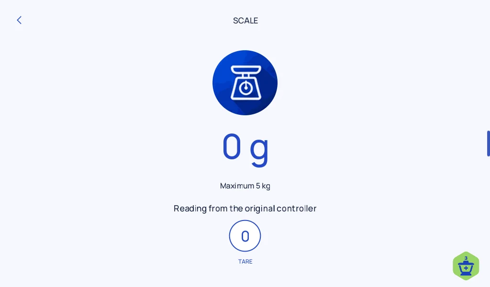

Monsieur Cuisine Connect · SKMC 1200 B2
Technique
Running Lidlomix Pro on Connect required access to Android and preparing the app selection screen. Sensor readings and application operation were checked on the device.
1. Access to Android
The starting point was a guidebook Lidlomix-Hack by wpm-mh for Connect Trend. He showed that through the service port you can run the TWRP recovery environment and turn on ADB, i.e. computer communication with Android. The procedure was tested on Connect SKMC 1200 B2 with Android 6.0.
The socket is from the bottom of the robot, under a flap mounted with one screw. Both ports look alike. The cable with two men's USB-A plugs shall only be connected to the port marked "Android USB". Connection to the adjacent port ‘USB’ may damage the device.
- After connecting to Windows, a full memory copy was made in the SP Flash Tool. The compatibility of the two boot area readings was verified before further work.
- The TWRP was temporarily launched and the USB configuration was changed to make Android available to ADB. The factory boot image was then restored.
- After restarting, the connection to the computer was approved on the robot screen. ADB enabled the installation and updating of the application.
See port photo and backup dump


2. One start screen, two applications
A separate launcher, or Android launch screen, was added. Opens a factory Monsieur Cuisine or Lidlomix Pro. Back to selection works with a gesture from the right edge, allowing you to switch the application without turning off the robot.
In the factory tests, the countdown to sleep could put the screen out after moving to Pro. Changed switching. As the robot stands, the output from the factory interface ends the countdown, and the hardware service continues to provide sensor readings.

3. Application written from scratch in Rust
Lidlomix Pro and its interface were written from scratch in Rust, without using the source code of Connect or Smart applications. The familiar elements of the layout facilitate the operation. Programs, offline directory and regulation have been implemented. For sensor readings Pro communicates with robot hardware service.
The ArtCraft team inspired this approach by building their own apps with interfaces that feel familiar. Rust helps manage memory and catch some errors at compile time. The older Connect’s graphics mattered too. Rendering was adapted to the Mali-400 chip so the interface would display correctly. PhotoCraft by ArtCraft team · About the language Rust
In a factory browser Connect with Android 6 failed to log into ChatGPT. When Firefox was uploaded, the limited RAM memory made the browser run for a very long time. ChatGPT can still be opened on the robot, and the faster way of passing the rules works through the app on the phone.
A QR code appears on the robot screen. After scanning the code, you can download the app to the phone directly from the device via local Wi-Fi. The app pairs up with the robot on the same network. In previous attempts, a similar function in Smart's factory software had problems maintaining steaming. In Lidlomix Pro, the connection is also used to send the ready-to-use recipes.
The recipe prepares at ChatGPT on your phone, downloads as a JSON file and sends from the application to the robot via local Wi-Fi. Lidlomix Pro automatically import the file and prepare the recipe steps. The ready-made proposal goes to the “Provisions in preparation” section, where it waits for verification and approval before being added to the library.
What the weight showed
In tests, the Connect control panel reported weight in steps of 5 g and such resolution shows Lidlomix Pro. It depends on the version of the equipment. The SKMS 1200 C1 instruction gives a step of 1 g and the SKMS 1200 A1 describes the weighing every 5 g. Manual C1 · Instruction A1
After recognition of Smart, the application shows a choice of step 1 g or 5 g. Confirmation of reading every 1 g for each version requires testing on physical copies. In the current version, Pro uses plate readings and transmits control commands to it in compatible modes. On Connect, weighing, rotation, temperature, countdown and intervals were checked. See weighing in recipe

Working on the Update Server
The Lidlomix Pro update server is under way. It is intended to deliver new and improved regulations with photos and subsequent versions of the application.
The server provides a panel to publish the regulations, photos and files of the APK and API, which is connected by the robot application via HTTPS. Before installing the downloaded package, the application checks its signature and the check sum. The installation of the new version of the APK user approves in the system installer of Android.
After a one-time update of the system to the server's version, the next recipes and versions of the application will be downloaded through the update menu on the robot. This will allow you to complete the rule base on an ongoing basis and use new features without re-entering the entire system.
To date, one-time system upload has left the user with the delivered version of the application and the rule base, and subsequent changes required manual installation. See change history entry.
What Speeded Codex
Codex, an OpenAI programming agent, supported log analysis, code review and writing sensor reading tests and program response to signal loss. Screen operation and shallow signals were verified on physical Connect.